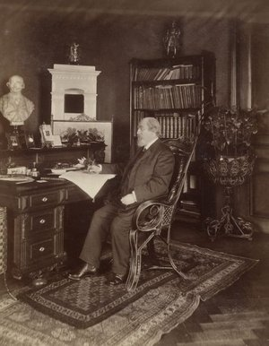
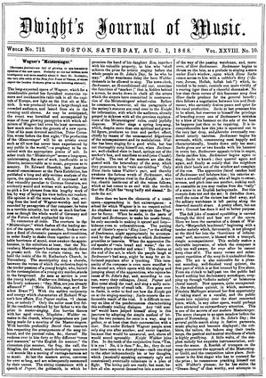
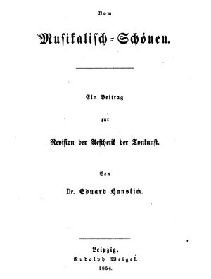
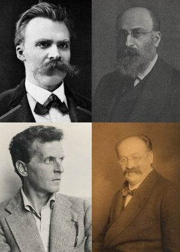

Hanslicks historische Bedeutung
Alexander Wilfing
Eduard Hanslick ist heute vielen Menschen vor allem als Musikkritiker, als Freund von Brahms und Feind von Wagner, im Großen und Ganzen als „il Bismarck della critica musicale“ bekannt, als den ihn – wie Hanslick selbst in seiner Autobiographie Aus meinem Leben berichtet – niemand geringerer als Giuseppe Verdi bezeichnet hat. Den KonzertgeherInnen und OpernbesucherInnen von heute ist er als konstanter Bestandteil von Programmheften ein Begriff, wobei Hanslick oft die Rolle des von der historischen Entwicklung überholten Reaktionärs einnimmt. Speziell Hanslicks Widerstand gegen Wagners späte Opern, gegen Listzts Sinfonische Dichtungen und die späteren Ausläufer der sogenannten Neudeutschen wie auch sein mangelndes Verständinis für Komponisten wie Gustav Mahler und Richard Strauss haben diesen Ruf genährt. Dass Hanslicks Schriften trotz allem weiter zitiert werden, liegt neben deren Inhalt in erster Linie an dem raffinierten Schreibstil und der (oftmals allzu) scharfen Zunge des Kritikers, die die Lektüre seiner Texte auch nach vielen Jahren lohnend scheinen lässt. Dabei stehen erfrischend süffisante Passagen, wie das Lob für Die Meistersinger, die als „denkwürdiges Kunsterlebniß“ trotz ihrer „interessanten musikalischen Ausnahms- oder Krankheitserscheinungen ... immerhin bedeutender und nachhaltiger anregen, als ein Dutzend Alltags-Opern jener zahlreichen gesunden Componisten, denen man um die Hälfte zu viel Ehre erweist, wenn man sie Halbtalente nennt“ (Neue Freie Presse, 26.06.1868) neben fragwürdigen Bemerkungen wie der berühmten Überlegung anlässlich Tchaikovskys Violinkonzert „ob es nicht auch Musikstücke geben könne, die man stinken hört“ (Neue Freie Presse, 24.12.1881).

Eduard Hanslick, Fotographie von Ludwig Grillich (1892); mit Genehmigung der Österreichischen Nationalbibliothek
Wie man zu diesen Aussagen auch immer stehen möchte, ist Hanslicks Bekanntheit als vermutlich wichtigster Musikkritiker seiner Epoche wohl auch derartig kantigen Meinungen sowie seinem Profil als Gegenspieler der Neudeutschen geschuldet. Der Ruf als durchgehend konservativer Musikkritiker ist dabei leicht übertrieben: Obwohl Hanslick sicherlich die motivisch-thematische Arbeit von Brahms und Beethoven als Ideal der Musik nahm und Wagners „unendliche Melodie“ als Irrweg ansah, konnte er sich auch für modernere Komponisten wie Antonin Dvořák, Edvard Grieg und Bedřich Smetana erwärmen. Seine Reichweite beschränkte sich hier nicht auf Wien, Österreich und den deutschen Sprachraum, sondern erreichte bereits zu Hanslicks Lebzeiten internationale Ausmaße. Repräsentativ ist dabei vor allem das Journal of Music des Bostoner Kritikers John Sullivan Dwight (1813–1893) zu nennen, das zwischen 1852 und 1881 mit finanzieller Unterstützung der Harvard Musical Association erschien. Dwight, der Hanslicks klassizistische Ansichten teilte und ab und an sogar übertraf, übersetzte zahlreiche seiner Kritiken ins Englische, sodass zwischen 1866 und 1881 mehr als drei Dutzend seiner Aufsätze ein Bostoner Publikum erreichten. Hanslicks Reputation nährte sich zudem auch aus einer regen Teilnahme an internationalen Musikereignissen und eingehenden Reiseberichten aus u.a. Bayreuth, London und Paris bis hin zu den USA, die von ihm 1890 bereist wurden (siehe etwa seine Berichte in Neue Freie Presse, 24.06., 25.06. und 29.07.1890). Diese weitreichenden musikkritischen Tätigkeiten resultierten letztendlich darin, dass Hanslick immer wieder als Teil namhafter Musikjurys fungierte – so verschaffte er 1877 auf diese Weise etwa Dvořák ein beachtliches Stipendium – und bei internationalen Ausstellungen als Berichterstatter sowie später als Entsandter Österreichs hervortrat, so z.B. bei den Weltausstellungen in London (1862), Paris (1867) und Wien (1873).
Während Hanslicks Bekanntheit in der musikalischen Öffentlichkeit eng mit seinen Kritiken und der Gestalt Wagners verbunden ist, hängt seine anhaltende Bedeutung in Musikphilosophie und Musikwissenschaft von anderen Aspekten seines Schaffens ab: Im Jahr 1856 wird Hanslick zum Dozenten für die „Geschichte und Aesthetik der Tonkunst“ ernannt, was nicht nur in Wien sondern vielmehr im gesamten deutschen Sprachraum die früheste derartige Position darstellt. Wenn auch seit dem achtzehnten Jahrhundert Musikhistorie an Universitäten unterrichtet wird, hing ihre Lehre bis dahin mit dem Amt als praktischer Musikdirektor zusammen. Die theoretisch orientierte Dozentur Hanslicks, dem 1861 die außerordentliche und 1870 die ordentlichen Professor erteilt wurde, war ein Novum, das heute als erste Professur jener Disziplin gilt, die erst seit Gründung der Vierteljahrsschrift für Musikwissenschaft (1885) unter diesem Namen allgemein geläufig ist. (Zur Geschichte der Disziplin in Wien, siehe diesen Link.) Als einzige im engen Sinne historische Abhandlung publizierte Hanslick im Jahr 1869 Band 1 der Geschichte des Concertwesens in Wien, die als Pionierleistung der Musiksoziologie betrachtet werden könnte. Spätere Bücher setzen sich primär aus gesammelten Rezensionen, Berichten und Aufsätzen zusammen, die Hanslick als lebendige Geschichte der Musik in Wien und als „ästhetische Statistik der Oper“ verstanden wissen wollte (Die Moderne Oper, Band 1, S. VI). Kevin Karnes hat diesen Ansatz in Music, Criticism, and the Challenge of History (Oxford University Press 2008, Kap. 2) mit Blick auf Dilthey, Droysen und Burckhardt als frühen Versuch einer partikularistischen Geschichtsschreibung gefasst, welcher sich aber gegen die philologische Musikforschung von u.a. Friedrich Chrysander, Otto Jahn und Philipp Spitta geschichtlich nicht durchsetzte. Wenn Hanslicks Relevanz für die Genese der akademischen Musikwissenschaft auch größtenteils unterschätzt wird, bleibt dessen Bedeutsamkeit als Fachbegründer trotz allem klar hinter jener seines Nachfolgers Guido Adler zurück, welcher im Jahr 1901 das Wiener Institut für Musikwissenschaft auf die Beine stellte und die Methodik der Disziplin mit dem Aufsatz „Umfang, Methode und Ziel der Musikwissenschaft“ (1885) für viele Jahre prägte.

Neben Hanslicks Rollen als Rezensent und Professor für die „Geschichte und Aesthetik der Tonkunst“ bleibt dessen Name jedoch vor allem mit einer Schrift engstens verbunden, die er im Alter von nur 29 Jahren schrieb: Vom Musikalisch-Schönen: Ein Beitrag zur Revision der Aesthetik der Tonkunst. Diese Schrift, welche zu Hanslicks Lebzeiten zehn von ihm revidierte Auflagen durchlief (siehe dafür das Verzeichnis von Eduard Hanslicks Schriften), kann ohne alle Übertreibung als die wirkungsreichste musikästhetische Abhandlung des neunzehnten Jahrhunderts charakterisiert werden, deren zentrale Theoreme die ästhetische Diskussion fortwährend (mit)prägen. Vom Musikalisch-Schönen (oder kurz VMS) entwickelt eine spezifisch aus Eigenschaften des Musikmaterials hergeleitete Perspektive, deren Fokus auf das Objekt, kritische Haltung gegen metaphysische Spekulationen und moderne Definition der Frage nach Musik und Gefühl – die dem kognitivistischen Emotionskonzept des zwanzigsten Jahrhunderts sehr nahe kommt – für heutige Diskurse weiterhin relevant sind. Besondere Bedeutung sollte dabei Hanslicks vielzitierte Ablehnung der „verrotteten Gefühlsästhetik“ zukommen – eine Phrase, die sich nur im Vorwort zur ersten Auflage finden lässt (S. V) – die wie die Analogie zwischen dem Inhalt von Musik und der bewegten Arabeske und dem berühmten Schlagwort, dass „tönend bewegte Formen ... einzig und allein Inhalt und Gegenstand der Musik“ seien (S. 32), Hanslicks Rezeption bis zum heutigen Tag gestaltet. (Eine gründliche Einführung zu Hanslicks Positionen sowie deren Kontexten findet sich hier.) Der Ruf von Hanslicks VMS-Traktat als Pamphlet, das primär gegen Richard Wagner gerichtet gewesen sei – ein Ruf, dem er in späteren Vorworten durchaus Vorschub geleistet hat und der der Popularität seiner Abhandlung sicherlich nicht abträglich war – greift dabei jedoch klar zu kurz und wird auch der Wirkung Hanslicks nicht vollauf gerecht.
Hanslicks Rezeption geht hier weit über seine eigene Epoche hinaus und schließt mit Blick auf die Musikphilosophie und Musikwissenschaft derartig zentrale Personen wie Guido Adler, Friedrich Nietzsche, Heinrich Schenker und Ludwig Wittgenstein ein. Die Wirkung von VMS, die sich von den Anfängen der akademischen Musikforschung über zahlreiche Komponisten (Pfitzner, Schönberg, Strawinsky, etc.) bis hin zu bekannten Philosophen wie Theodor W. Adorno, Karl Popper und Roman Ingarden erstreckt, ist alles in allem noch immer kaum ernstlich erforscht. Die Literatur beschränkt sich hier zumeist auf flüchtige Hinweise bezüglich gewisser Analogien zwischen Hanslick und späteren Autoren, die oft im Vagen bleiben. So finden sich etwa deutliche Parallelen zwischen Hanslicks VMS-Traktat und der Spätphilosophie Wittgensteins, der die Bedeutung eines Musikstücks als spezifisch musikalisch bestimmte und die Idee, dass Musik erfolgreich verbalisiert werden könnte, dezidiert ablehnte. Während diese Kontexte noch kaum geprüft wurden, ist Nietzsches Beziehung zu Hanslick von der Geburt der Tragödie aus dem Geiste der Musik (1872) bis zum Spätwerk (Der Fall Wagner, 1888; Nietzsche contra Wagner, 1889), das Wagner reserviert begegnet, schon öfters Thema der Forschung gewesen. Auf besonders fruchtbaren Boden ist VMS dann aber bei der analytischen Philosophie mit ihrem Fokus auf den Bezug von Gefühl und Musik und objektiver Ausrichtung gefallen. Obwohl Hanslick bereits im Rahmen von Susanne K. Langers Philosophy in a New Key (1942) eine große Rolle spielte, rückte VMS etwa seit den 1980ern ins Zentrum der Debatte. Diese Entwicklung hängt vor allem von der Relevanz des kognitivistischen Emotionskonzepts im analytischen Musikdiskurs ab, das bei Hanslick expressis verbis angelegt ist und die Aufmerksamkeit von Musikphilosophen wie Malcolm Budd, Peter Kivy und Stephen Davies auf sich zog. (Eine genaue Analyse von Hanslicks Rezeption im englischen Sprachraum findet sich hier.) Wenn auch kein moderner Ästhetiker mit Hanslicks VMS-Traktat komplett d’accord geht, übte sein Framing von Themen wie dem Bezug von Musik auf affektive Zustände (Gefühlen, Emotionen, Stimmungen etc.), der Autonomie des „Kunstwerks“ oder auch des ästhetischen Stellenwerts der musikalischen Faktur nachhaltige Wirkung aus und beeinflusst betreffende Debatten bis zum heutigen Tag.

Collage von Bildern von Adler, Nietzsche, Schenker und Wittgenstein (Wikipedia Creative Commons)Eduard Hanslicks Schriften
- „Ueber den subjektiven Eindruck der Musik und seine Stellung in der Aesthetik“, in: Oesterreichische Blätter für Literatur und Kunst 30 (1853), 177–178; 31 (1853), 181–182; 33 (1853), 193–195.
- „Die Tonkunst in ihren Beziehungen zur Natur“, in: Oesterreichische Blätter für Literatur und Kunst 11 (1854), 78–80.
-
Vom Musikalisch-Schönen: Ein Beitrag zur Revision der Aesthetik der Tonkunst, Leipzig:
Rudolph Weigel 1854. Weitere Auflagen:
- 2. Auflage, Leipzig: Rudolph Weigel 1858.
- 3. Auflage, Leipzig: Rudolph Weigel 1865.